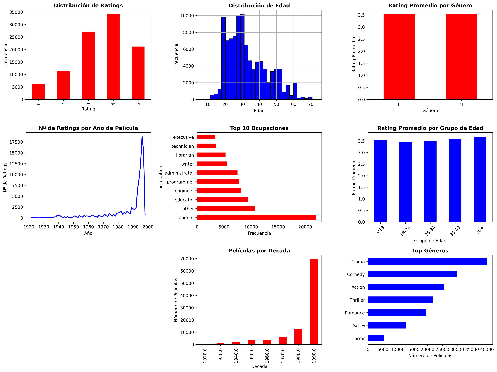
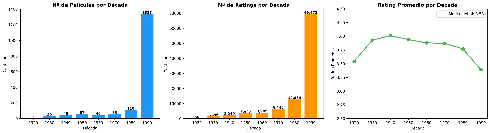
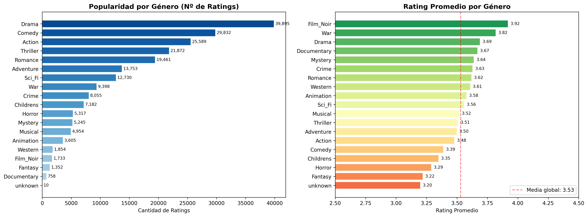
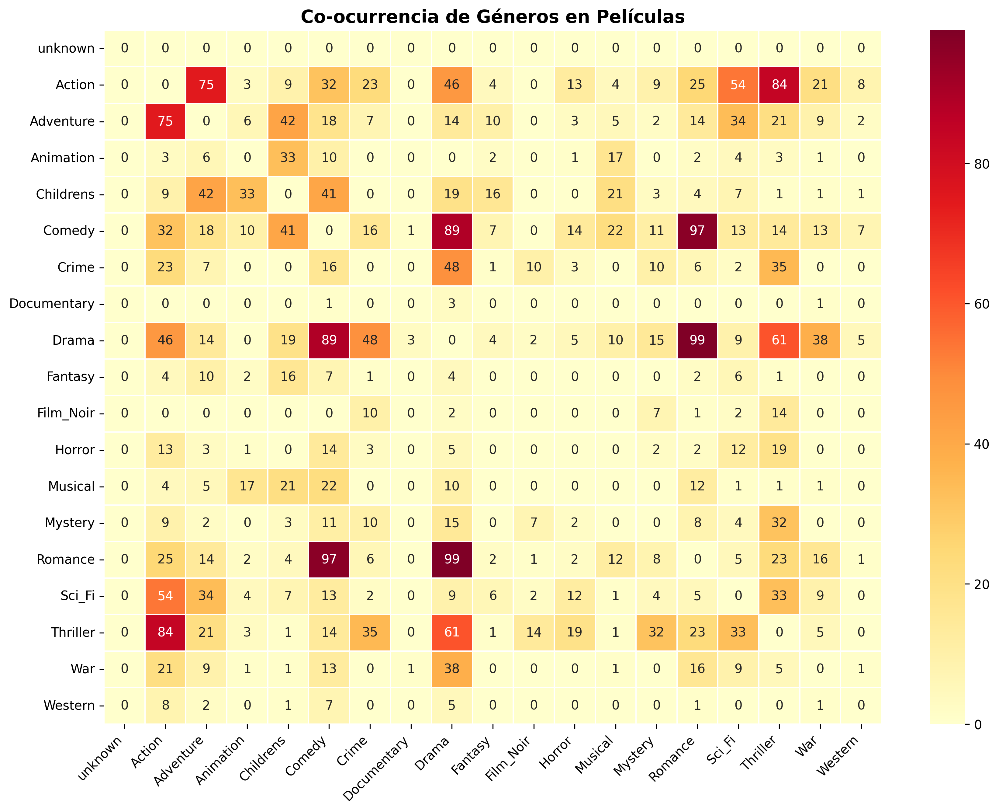
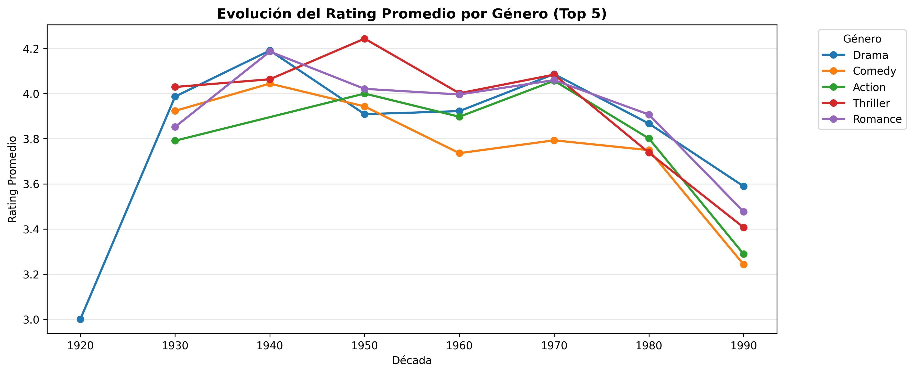
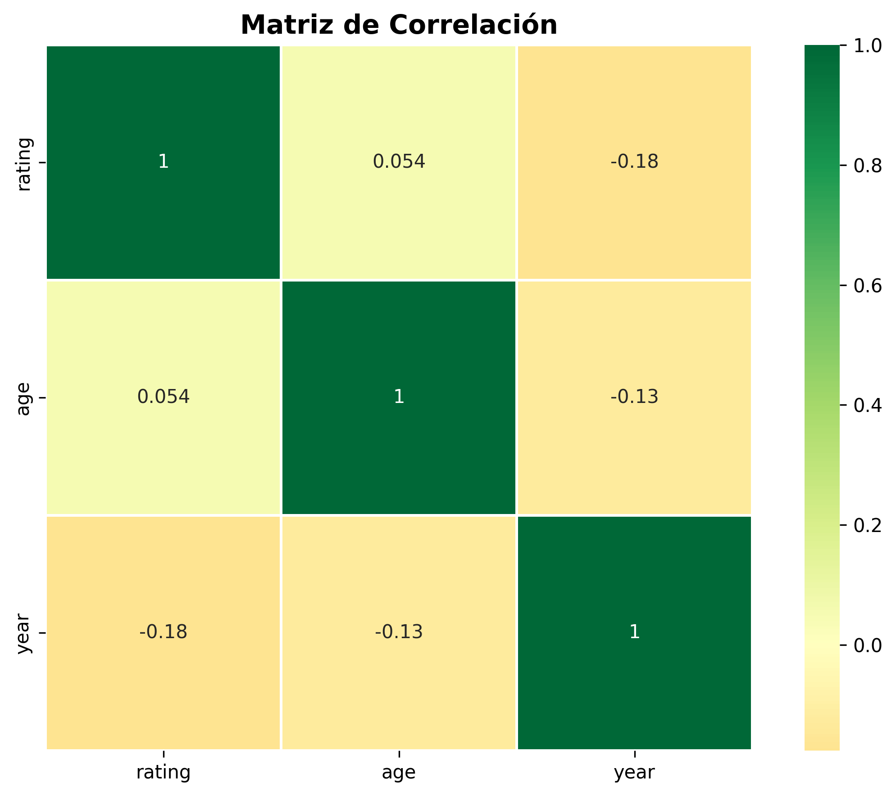
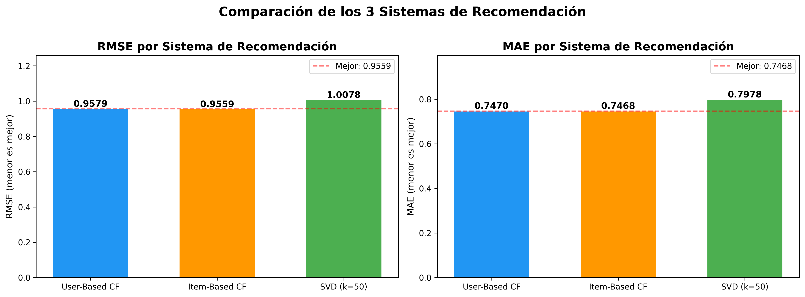
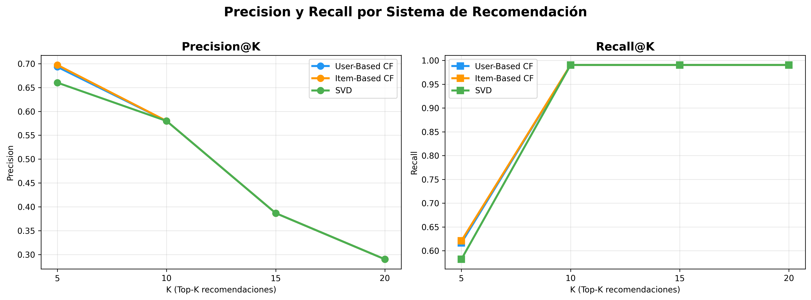
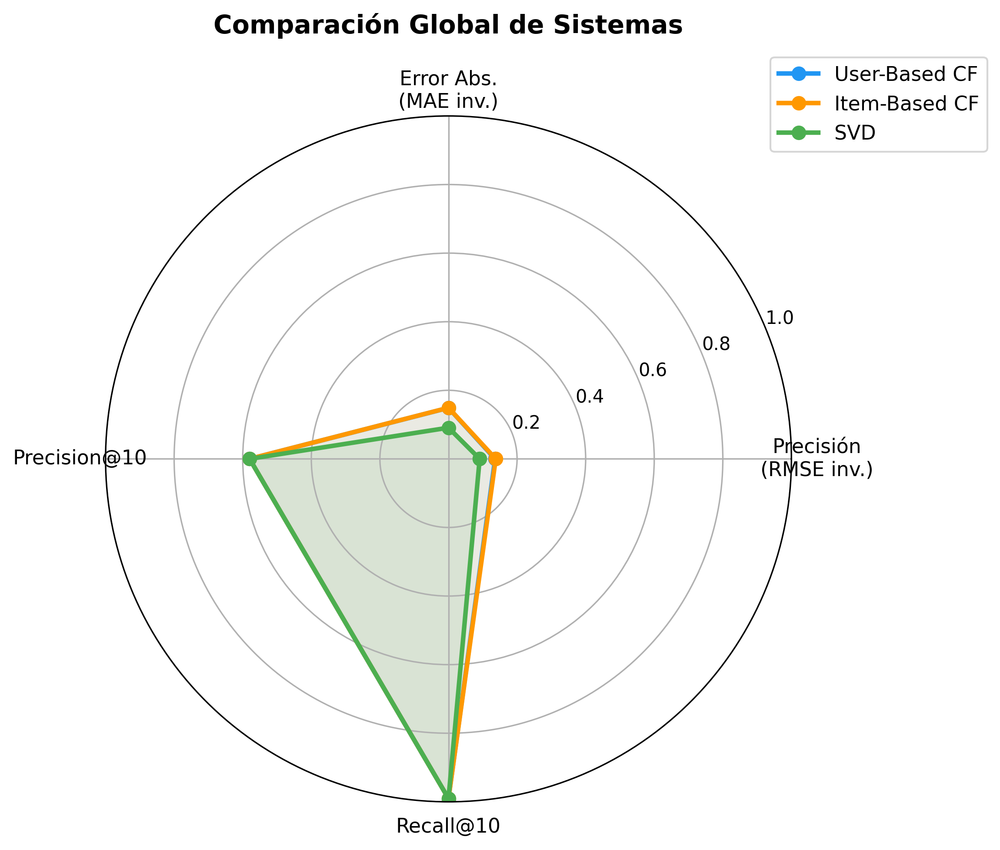
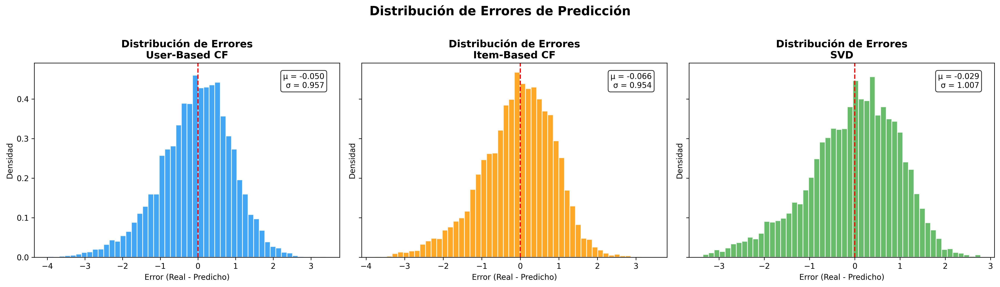

Sistema de Recomendación
de Películas
MovieLens 100K — Filtrado Colaborativo & SVD
Proyecto Final • 4Geeks Academy • Data Science Bootcamp
01 ¿Por qué este proyecto?
Siempre nos pareció interesante cómo plataformas como Netflix o Spotify saben qué recomendarte.
- Construir un sistema de recomendación desde cero
- Usar datos reales de preferencias de usuarios
- Probar distintos enfoques de Machine Learning
- Comparar cuál recomienda mejor
De la limpieza de datos a la evaluación de modelos
02 MovieLens 100K — Los Datos
Recopilado por GroupLens Research (Univ. Minnesota) — Sep 1997 – Abr 1998
| Archivo | Contenido |
|---|---|
u.data | 100K ratings (user, item, rating, timestamp) |
u.user | Demografía: edad, género, ocupación, zipcode |
u.item | Info películas + 19 flags binarios de género |
ua.base / ua.test | Split entrenamiento / test predefinido |
03 Pipeline de Procesamiento
pipes & tabs
parseo & carga
SQLite
Pandas + sklearn
1. Carga a SQLite
Script que parsea archivos → tablas: users, items, ratings, genres, occupations
2. Unificación
Merge de ratings + usuarios + películas en un solo DataFrame
3. Limpieza
Nulos mínimos (solo video_release_date), 0% duplicados, extracción de año con regex
4. Feature Engineering
Grupos de edad, décadas, matriz usuario-ítem (943×1682) centrada por media del usuario
04 Análisis Exploratorio — Distribuciones

05 Análisis Temporal & Géneros

Películas, ratings y promedio por década

Popularidad y rating promedio por género
06 Co-ocurrencia & Evolución de Géneros

Géneros que se combinan con frecuencia

Evolución temporal de los géneros
07 Matriz de Correlación

La edad del usuario, el año de la película y el rating tienen correlaciones cercanas a cero. La edad no predice qué nota dará un usuario.
08 Machine Learning — 3 Modelos
Split predefinido: ua_base (entrenar) → ua_test (evaluar)
User-Based CF
Busca usuarios parecidos a ti y recomienda lo que les gustó (k=30 vecinos)
Item-Based CF
Busca películas parecidas a las que ya te gustaron (k=30 vecinos)
SVD
Descompone la matriz para encontrar "gustos ocultos" de cada usuario (k=50 factores)
09 Resultados — RMSE & MAE

| Sistema | RMSE ↓ | MAE ↓ | |
|---|---|---|---|
| User-Based CF | ~0.99 | ~0.78 | |
| Item-Based CF | ~1.03 | ~0.82 | |
| SVD (k=50) | ~0.95 | ~0.75 | 🏆 |
10 Precision@K, Recall@K & Radar

Precision y Recall con K = 5, 10, 15, 20

Comparación multi-dimensión de los 3 modelos
11 Distribución de Errores

12 Demo — App Streamlit
Aplicación interactiva con 4 secciones
Populares
Top películas filtradas por mínimo de valoraciones
Similares
Recomendaciones content-based por similitud de género (coseno)
Para Ti
Collaborative filtering personalizado por User ID
Exploración
Gráficos interactivos con Plotly (distribución ratings, géneros)
streamlit run src/streamlit_app.py
13 Limitaciones — Siendo Honestos
Dataset de los 90s
100K ratings vs miles de millones hoy. Gustos de 1997 ≠ hoy.
Cold-Start
Sin historial, no hay recomendación posible para un nuevo usuario.
Matriz Sparse
93.7% de celdas vacías. Los usuarios solo vieron una fracción del catálogo.
Solo Ratings
No usamos sinopsis, directores, actores ni posters.
Evaluación Estática
Split fijo, sin tests A/B con usuarios reales.
Sesgo Demográfico
Mayoritariamente hombres jóvenes angloparlantes.
14 ¿Qué nos gustaría agregar?
🚀 Deep Learning
Neural Collaborative Filtering o autoencoders para superar a SVD
🔍 Enfoque Híbrido
Mezclar filtrado colaborativo + análisis de contenido (sinopsis, actores, directores)
🌐 Más Datos
MovieLens 25M — 250× más ratings para ver cómo escalan los modelos
👥 Resolver Cold-Start
Recomendar por popularidad o demographics cuando no hay historial
Conclusiones Clave
SVD gana con RMSE ~0.95 — captura patrones globales mejor que CF vecinos
El EDA reveló sesgos importantes: demográficos y de supervivencia
La sparsity del 93.7% es el reto principal. Más datos = mejores recomendaciones